This is a lecture from my Natural Language Processing Course at Twente.
Language Modelling
Language Modelling
- is the task of predicting what words come next
- p(in | Please turn your homework) > p(the | Please turn your homework)
- It also computes the probability of a sequence of words
- p(Please turn your homework in) > p(in Please homework turn your)
Probabilities (very briefly)
Measure how likely an event is to occur or how likely a proposition is true. Probabilities of all possible alternatives add up to one
- Conditional probability: — the probability of given
- Joint probability: — the probability of and
- if a,b are independent, then:
- if a,b are independent, then:
Chain rule of probability
N-grams
please turn your homework ___
A n-gram is a chunk of n consecutive words.
-
unigrams: “please”, “turn”, “your”, “homework”
-
bigrams: “please turn”, “turn your”, “your homework”
-
trigrams: “please turn your”, “turn your homework”
-
4-grams: “please turn your homework”
Joint probability of words in a sentence
or
In general, we can approximate
so that the probabilty of a sequence
Maximum Likelihood Estimation
Example
Given the following corpus of 3 sentences using the Maximum Likelihood Estimation
⟨s⟩ I am Sam ⟨/s⟩
⟨s⟩ Sam I am ⟨/s⟩
⟨s⟩ I do not like green eggs and ham ⟨/s⟩
And the probability of the sentence I am Sam:
Breaking down why the examples give these values
In the first case, we compute the probability of starting a sentence with the word “I”. In this case 2 out of 3 sentences start with it, therefore 0.67. Same for the second example.
In the second case, what is the probability of the word am following immediately after I? In 2 out of 3 cases we see this happenning, therefore 0.67 again. Same for the second example.
In the last 2 cases we only took the first 2 sentences into consideration. In the last example we are computing the probability of a sentence to finish with the word “Sam”, therefore 0.5.
Perplexity
What do those numbers in the example mean? How do we quantify? Where is the noise coming from?
The perplexity of a language model on a test set is the inverse probability of the test set, normalized by the number of words.
For set :
- It decreases as model improves. REMEMBER to include sentence end-markers in the total count of word tokens .
- It is only comparable for models with the same vocabulary.
Out of Vocabulary Words
What about unknown words in the test set?
Smoothing
if at test infinite perplexity on whole set. Zero probabilities make evaluation impossible.
Smoothing suggests:
- Slightly increase the probability of unseen instances
- Requires reducing the probability of seen instances
- Multiple approaches
Laplace Smoothing
- Rough adjustment to MLE
- “add-one” smoothing
, for brevity. How often occurs in the training data.
= number of words in the dataset.
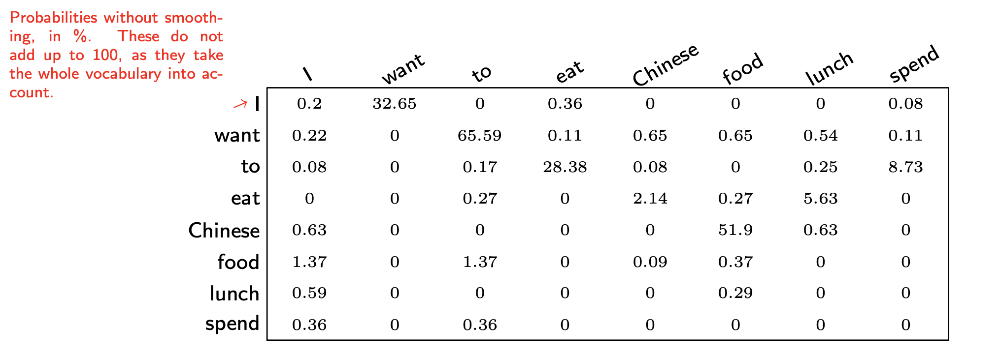
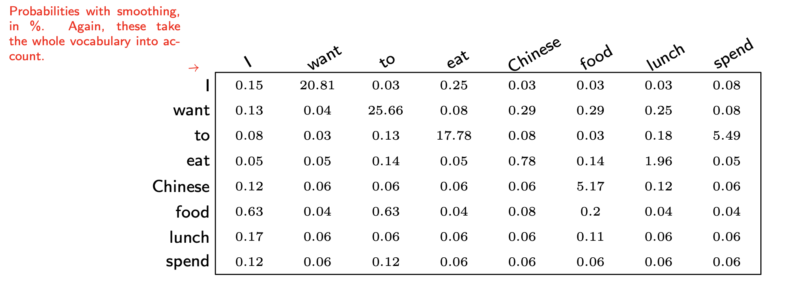
- Define “adjusted counts” to keep denominator N (divide by N: probability)
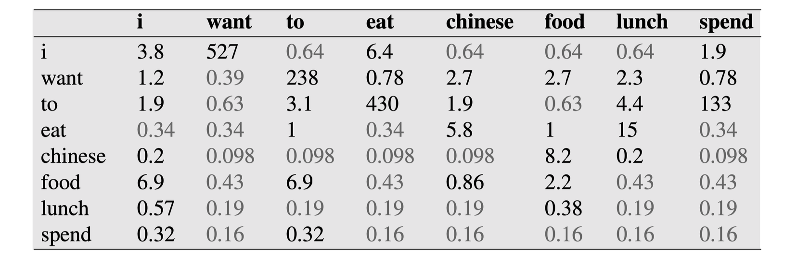
- Define “relative discount”:
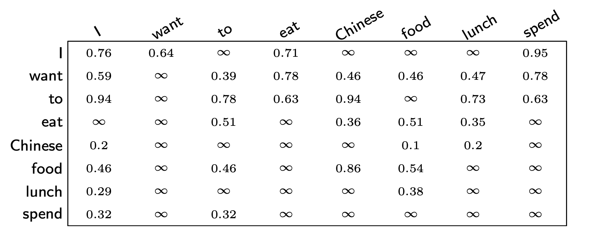
- “add-k smoothing”:
k = 0
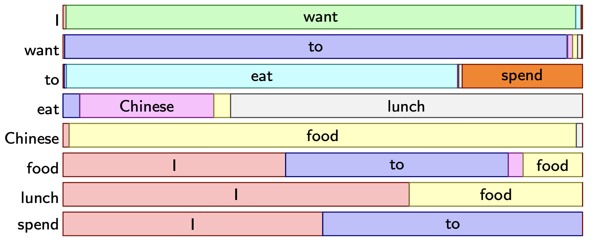
k = 0.1
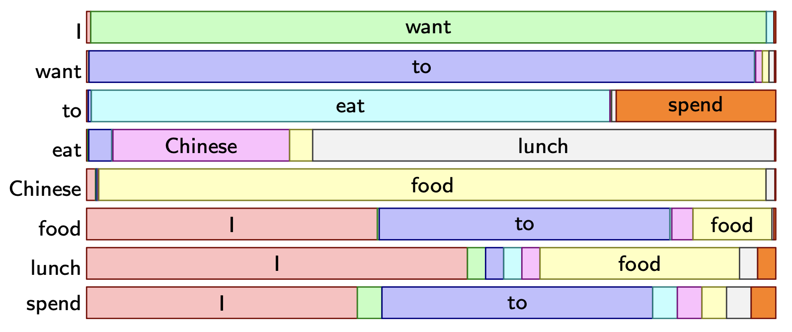
k = 1
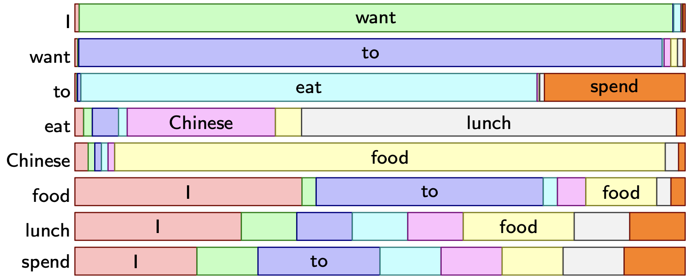
Backoff and Interpolation
As n increases, the number of possible n-grams increases exponentially. So the question is: can we use lower-order n-grams to estimate higher-order n-grams?
Interpolation
- Mix the probability estimates from all the n-gram estimators (high to low until unigrams)
- Weighted average of different order n-gram probabilities:
with .
- n-gram-specific λ learnt on a held-out corpus.
Stupid Backoff
- Recursively “back off” to a lower-order n-gram if we have zero evidence for a higher-order n-gram
Problem: for huge corpora (the web), it is hard to:
- Store probabilities
- Compute correct back-off weights
Solution: don’t compute probabilities and use a fixed weight
Text Classification
- Binary
- Spam filter: spam or not spam
- Multi-class
- Language identification: English, Thai, Italian, Chinese, Nepali,
- Sentiment analysis: positive, negative or neutral
- Multi-label
- Subject indexing
- Extreme Multi-label Text Classification (XMTC) when there are thousands, or ten of thousands of candidate classes
Classification Methods
Basically I would always choose supervised machine learning (Naive Bayes, Logistic Regression, Random Forest, etc.)
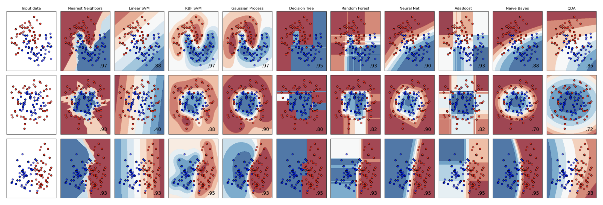
Normally a classifier expects a numerical input so what are the features? How do we identify features from text?
Types of textual features:
- Words: normalisation
- Characteristics of Words: captialisation (US vs us)
- Part-Of-Speech: nouns, verbs, etc
- Grammatical structure, sentence parsing
- Grouping similar words: {happy, merry}, numbers, dates
- n-grams: “ing,” “re”
Binary Classification
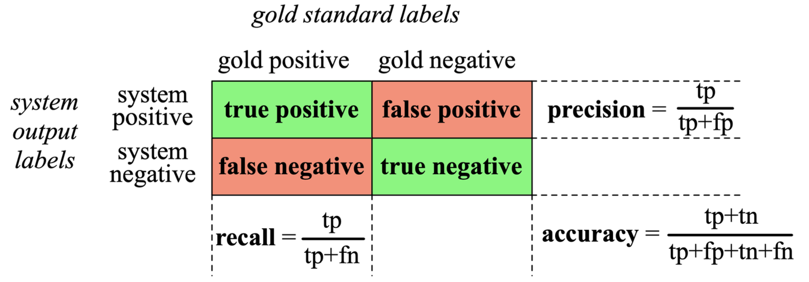
F1 measure:
Multi-class Classification
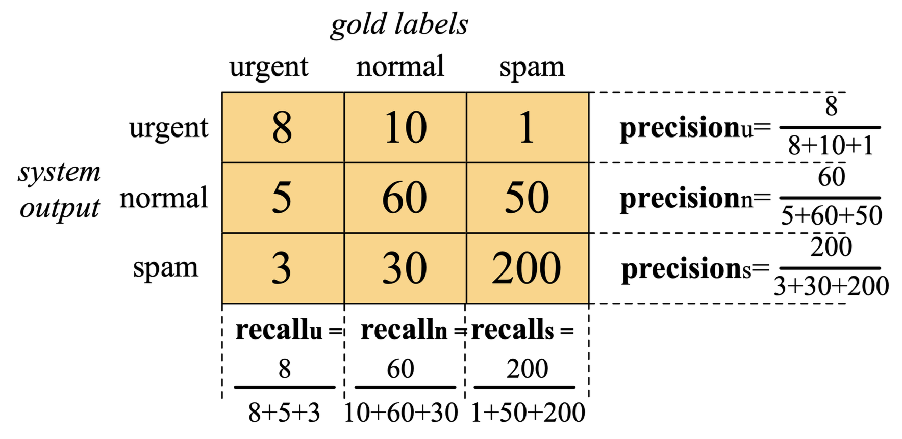
Confusion matrix for a three-class categorization task, showing for each pair of classes (c1,c2), how many documents from c1 were (in)correctly assigned to c2.
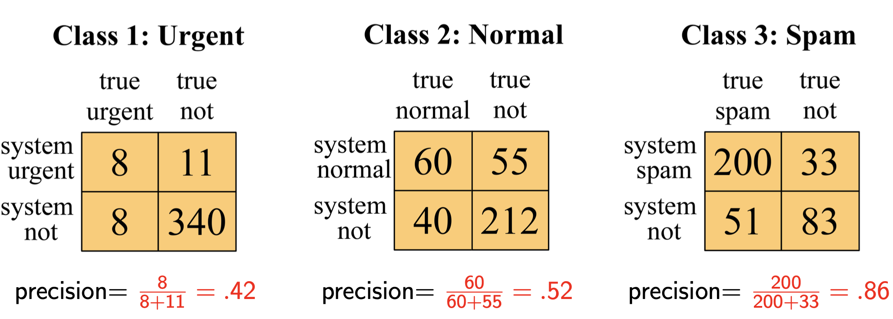
precision
- macro average precision
- micro average precision
Always check whether your classes are balanced!
Practical issues
Let’s say I want to build a text classifier for real, but what should I do? Depending on the training data:
- no training data manually written rules
- very little data Naive Bayes
- reasonable amount of data any clever classifier
- huge amount of data high accuracy at high cost, simple method or deep NN